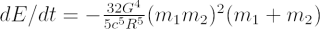
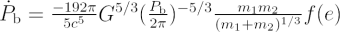
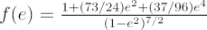

In Einstein’s General Theory of Relativity, where space, time, and gravity are interwoven into one self-consistent theory, it is predicted that gravitational waves should be generated that are analogous to light in electromagnetism. The terms gravitational waves and gravitational radiation are interchangeable, similar to electromagnetic radiation and electromagnetic waves.
But what emits gravitational waves? To emit gravitational waves, an object must be accelerating relative to another source, or if rotating, its mass distribution must change with time. So, objects like perfect spheres that are rotating do not emit gravitational waves, but things like binary stars do. Physicists explain this in terms of “a time-varying quadrupole moment”, which is a little beyond the scope of Cosmos.
Binary black hole inspiral & merger. Spacetime ripples propagate outward from the source. Drag to rotate, scroll to zoom. Best with headphones. Open fullscreen.
Gravitational radiation power
The power emitted in gravitational waves for everyday objects is absolutely negligible. Even the total power emitted in gravitational waves by Jupiter as it orbits the Sun is only a few kilowatts! In fact, there are only a handful of binary systems where there has ever been evidence of gravitational wave emission witnessed. The most celebrated example is the binary pulsar PSR B1913+16, which was shown via pulsar timing techniques to have its orbit shrink by 3 millimetres per orbital period due to the emission of gravitational waves. Hulse and Taylor were awarded the 1993 Nobel Prize in Physics for this achievement.
The power dE/dt emitted by a binary system of masses m1 and m2 in a circular orbit at a distance R from each other in gravitational waves is:

where c is the speed of light and G is Newton’s gravitational constant.
The orbital period derivative due to gravitational wave emission of two bodies of masses m1 and m2 with an orbital period Pb in an orbit of eccentricity e is:

where

Direct detection
Gravitational waves are polarised, and their direct detection (14 Sep. 2015, announced publicly in Feb. 2016) was considered one of the Holy Grails of physics. Instruments like the LIGO / Virgo/ KAGRA gravitational wave observatories now routinely detect the signal from the catastrophic last few tens of milliseconds of inspiralling pairs of neutron stars and stellar-mass black holes. Astronomers are also using the pulses from millisecond pulsars to search—with big radio telescopes—for the ripple of space-time due to supermassive black hole binaries.